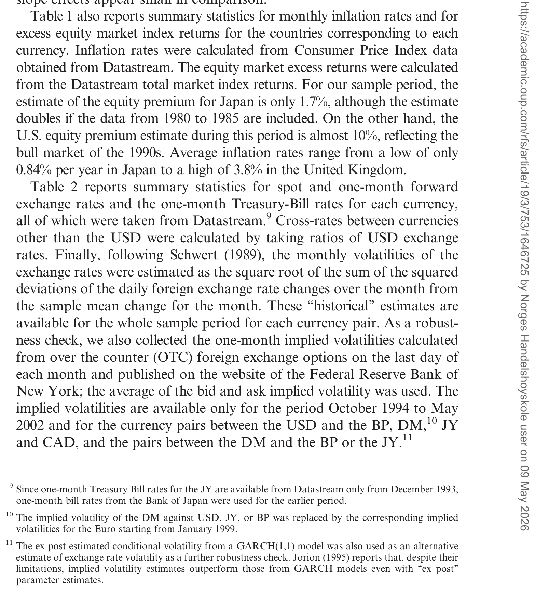
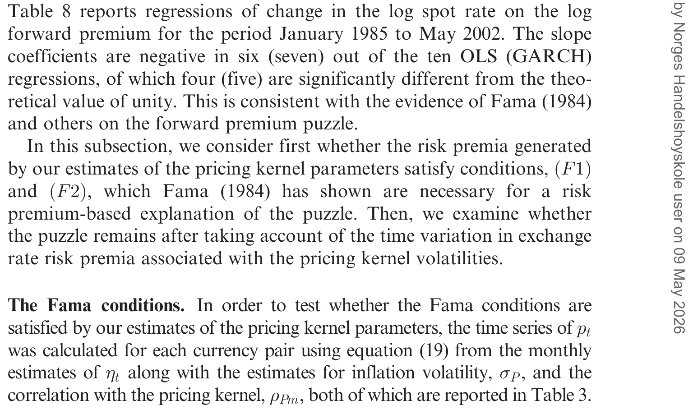
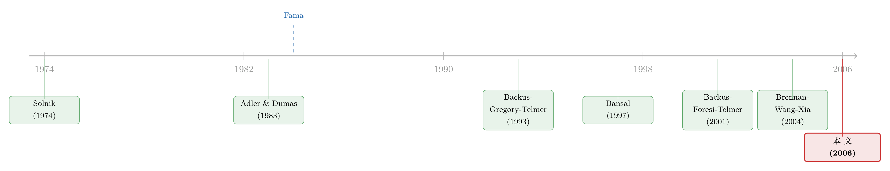

汇率之谜的另一半：把它交还给两国资本市场的「风险价格」
本文读的是 Brennan & Xia (2006, Review of Financial Studies)：在「资本市场完全整合」的无套利假设下，每种货币都有一个定价核 (pricing kernel)，而定价核的波动率恰好等于该货币计价收益的最大夏普比率。作者据此把汇率风险溢价、汇率波动率与两国定价核波动率绑进了同一组恒等式，再用只来自债券市场的数据去估计这些波动率——结果发现汇率波动确实由定价核波动驱动，估出的风险溢价也大体满足 Fama (1984) 解释「远期升水之谜」所需的条件；但在加元和日元上，谜，仍然没破。
1 一个被预测「反」了的方向
故事得从一桩四十年没破的旧案讲起。
按教科书的直觉，如果一国利率高、远期汇率相对即期是贴水（远期升水为负），那是市场在告诉你：这种货币未来大概会贬值，贬值幅度正好抵掉利差，让你两边投资无差异——这就是非抛补利率平价应有的样子。可 Fama (1984) 把数据摆出来，发现的却是反过来的关系：当前的远期升水 \(\ln F_{t,\tau}-\ln S_t\) 与随后真实发生的即期汇率变动 \(\ln S_{t+\tau}-\ln S_t\) 之间，是显著为负的相关。这就是著名的 远期升水之谜（forward premium puzzle）。
Fama 当年给出的诊断很犀利：要让这个负相关成立，唯一的出路是承认存在一个时变的汇率风险溢价（time-varying foreign exchange risk premium），而且这个溢价必须满足两个苛刻的条件——它比预期的汇率变动更易波动，并且与预期汇率变动负相关。
诊断好下，药方难寻。问题在于：这个风险溢价到底从哪儿来？它为什么会时变？过去二十年的文献多半在外汇市场内部打转，用各种 GARCH 把溢价「拟合」出来，却很难说清它背后的经济含义。
接着，一个自然的问题是：风险溢价，归根结底是「风险的价格」乘以「风险的数量」。汇率的风险价格，会不会其实并不住在外汇市场里，而是住在每个国家自己的资本市场里？这正是 Brennan 和 Xia 的切入口。
同一条问题，本博客读过好几种回答的路子：有人把它藏进了一张主权 CDS 的价差里（见《汇率藏在一张「违约保单」的价差里》），有人干脆说这块溢价根本「找不到」（见《汇率里那块「找不到」的风险溢价》）。本文的回答是：去两国的债券市场里找。
2 核心一招：定价核的波动率，就是最大夏普比率
整篇文章的支点，是一个在资产定价里人尽皆知、却很少被这样用的事实。
无套利意味着：对任何一种计价单位（numéraire），都存在一个定价核 \(m\)，它给所有用这种单位计价的支付定价。把它写成扩散过程：
$$\frac{dm}{m} = -r(X)\,dt - \sigma(X)\,dz, \qquad \frac{dm^*}{m^*} = -r^*(X)\,dt - \sigma^*(X)\,dz^*$$
这里 \(r\)（\(r^*\)）是本国（外国）的瞬时实际无风险利率，\(X\) 是一组未指明的状态变量。关键在于 \(\sigma\)（\(\sigma^*\)）这个量。任何实际收益过程 \(dV/V\)，其瞬时期望收益满足
$$E\!\left(\frac{dV}{V}\right) = r\,dt + \sigma\,\sigma_V\,\rho_{Vm}\,dt$$
由于相关系数 \(|\rho_{Vm}|\le 1\)，把它取到极限就得到一句话：定价核的波动率 \(\sigma\)，正是用该国消费篮子计价时所能达到的最大夏普比率。换言之，\(\sigma\) 不是什么抽象参数，它就是这个经济体里「单位风险能换来多少超额收益」的天花板——风险的价格。
于是真正关键的一步在于：在完全整合的国际市场上，本国与外国定价核之间存在一个极其简洁的桥。设 \(s\) 为实际汇率（每单位外国购买力值多少本国购买力），无套利要求外国资产无论用哪国购买力衡量都被正确定价，这逼出了
$$m^* = m\,s$$
把 \(m^*=ms\) 两边的随机过程展开、令漂移项与扩散项分别相等，就得到实际汇率漂移（即风险溢价的来源）与一条波动率恒等式：
$$E\!\left(\frac{ds}{s}\right) = \big(r - r^* + \sigma\,\sigma_s\,\rho_{sm}\big)\,dt \tag{7}$$ $$(\sigma^*)^2 = \sigma^2 + \sigma_s^2 - 2\,\sigma\,\sigma_s\,\rho_{sm} \tag{8}$$
对 \(s^*\equiv 1/s\) 用同样的对称性可得 \(\sigma^2=(\sigma^*)^2+\sigma_s^2+2\,\sigma^*\sigma_s\,\rho_{sm^*}\)，与 (8) 联立，消去平方项，就得到全文的命门——作者称之为跨货币风险溢价约束（cross-currency Risk Premium Restriction）：
这条等式 (10) 的含义很硬：只要汇率有波动（\(\sigma_s\neq 0\)），它就必须被本国或外国的定价核之一（或两者）定价——汇率风险不可能在两边都被定价为零。作者点明，这正是 Siegel 悖论 因 Jensen 不等式而来的后果。把它推广到名义汇率，再代入 Fama 的分解，汇率风险溢价就有了两副等价的面孔。
3 风险溢价的两副面孔
第一副面孔是算术形式。名义汇率风险溢价可以写成
$$E - (R - R^*) = \sigma_P\,\rho_{SP}\,\sigma_S + \rho_{Sm}\,(\sigma_S\,\sigma) \tag{15}$$
其中 \(\sigma_P\) 是价格水平波动率、\(\rho_{SP}\) 是价格水平与汇率的相关性、\(\sigma_S\) 是名义汇率波动率、\(\sigma\) 仍是本国定价核波动率。若把 \(\sigma_P,\rho_{SP},\rho_{Sm}\) 都当成常数，溢价的时变就只来自两个东西：汇率波动率 \(\sigma_S\)，和定价核波动率 \(\sigma\)。这直接给出第一组实证检验——把外币投资的超额收益，回归在乘积项 \(\sigma_S\sigma\) 和 \(\sigma_S\) 上。
第二副面孔是对数形式。对 \(\ln S\) 用伊藤引理，名义汇率波动率会从漂移项里神奇地消掉，留下一个关于两国定价核波动率的二次函数：
$$E(d\ln S) - (R - R^*) = \tfrac{1}{2}\sigma_P^2 - \tfrac{1}{2}\sigma_{P^*}^2 + \tfrac{1}{2}\sigma^2 - \tfrac{1}{2}(\sigma^*)^2 + \sigma_P\,\rho_{Pm}\,\sigma - \sigma_{P^*}\,\rho_{P^*m^*}\,\sigma^* \tag{18}$$
这个二次结构，正好对应一个把 \(\sigma\)、\(\sigma^*\) 的线性与平方项塞进方差方程的 GARCH(1,1) 检验。
最妙的是，这一切都接得上 Fama 的诊断。按 Fama (1984) 把远期升水拆成两块：
$$\ln F_{t,\tau}-\ln S_t = \underbrace{p_t}_{\text{负的风险溢价}} + \underbrace{q_t}_{\text{预期汇率变动}}$$
Fama 的两个必要条件就是 \(\mathrm{Var}(p_t) > \mathrm{Var}(q_t)\)（条件 F1）与 \(\mathrm{Cov}(p_t,q_t) < 0\)（条件 F2）。作者指出，完全仿射（complete affine）的期限结构模型根本满足不了 F1——因为它把 \(\sigma^2\) 强行绑成了利率的仿射函数，给不出「利率很稳、风险溢价却剧烈波动」这种组合。要松绑，就得用 本质仿射（essentially affine） 模型，让风险补偿可以独立于利率波动而变动（这一点 Duffee (2002) 讲得最清楚）。这也是为什么作者要用本质仿射的高斯模型来估 \(\sigma\)。
这里有个聪明的设计：作者只用本国债券收益率来估本国的定价核波动率 \(\sigma\)，并不假设市场整合。逻辑是——只要假设本国债券风险溢价正比于 \(\sigma\)，就能从国债收益率里把 \(\sigma\) 估到一个比例常数之内。如此一来，「两国独立估出来的 \(\sigma\) 与 \(\sigma^*\) 是否满足线性约束 (10)」本身，就成了一个可证伪的市场整合检验，而不是由构造方式自动成立的恒等式。
4 数据与一道日元的裂缝
数据是 1985 年 1 月到 2002 年 5 月的月度数据，覆盖五种货币：美元（USD）、加元（CAD）、德国马克（DM）、英镑（BP）、日元（JY），以及它们之间的汇率。债券价格、票息、发行与赎回信息取自 Datastream；每月用三次样条对二十年以内的国债拟合零息收益率曲线，剔除可赎回、浮息、剥离债等。通胀与即期/远期汇率的描述统计见表 2。

Table 2: reports summary statistics for spot and one-month forward
模型对各国收益率拟合得都不错，唯一的例外是日元：1990 年代日本实际利率长期单边下行，与模型「均值回复」的设定明显不合，估出的实际利率均值回复参数几乎为零。这道裂缝会一路延续到结论里——日元，是全文最不听话的那个孩子。
5 三组结果，一个反转
第一，定价核波动率确实「同涨同跌」。 除日元外，各货币估出的定价核波动率呈现强烈共动；地理上越近的国家对，共动越强。更耐人寻味的是，共动在样本后半段（1994 年 10 月至 2002 年 5 月）明显更强——把一国定价核波动率的月度变化，回归在另一国的波动率变化和汇率波动率变化上，\(R^2\) 落在 18%–49%（不含日元对）。作者据此谨慎地说：资本市场整合，可能在这十几年里变好了。
第二，汇率波动率与定价核波动率，确实定价了风险溢价。 在算术形式 (15) 驱动的回归里，乘积项 \(\sigma_S\sigma\) 在 20 个回归中有 7 个至少在 10% 水平上显著；凡是涉及美元定价核波动率的，4 个里有 3 个在 5% 水平显著；而涉及加元定价核波动率的，则无一显著。汇率波动率 \(\sigma_S\) 自己在 20 个回归里有 12 个显著。在对数形式 (18) 的 GARCH 检验中，定价核波动率在 10 个回归里有 8 个至少在 6% 水平显著，\(R^2\) 在 6%–39%；方差方程里两国波动率联合显著的有 9 个。
于是反转出现。 既然能把风险溢价讲得这么漂亮，那它能不能顺手把 Fama 的谜也解了？作者把估出的溢价代回 Fama 条件——大多数货币对的确同时满足 F1 与 F2，支持了 Fama 当年的诊断：时变风险溢价是真实存在的。可是，当把远期升水重新塞回「即期减远期对定价核波动率」的回归里时，远期升水的系数在 10 个回归中仍有 4 个显著为负——谜没消失。这 4 个里，2 个涉及日元（我们已知它的 \(\sigma\) 估得最差），另 2 个涉及加元，而对加元，作者坦承自己没有解释。

Table 8: reports regressions of change in the log spot rate on the log by
换句话说：定价核波动率把谜讲清了一大半，证明 Fama 关于「风险溢价时变」的方向是对的；但在加元和日元上，谜底依旧在阴影里。这也呼应了 GARCH 检验里另一个诚实的细节——10 个方差方程中有 4 个的滞后平方残差仍显著，说明作者估出的定价核波动率，并不是汇率波动率的「完美工具」。
6 文献脉络
这条线索的源头，是国际资产定价的两块奠基石：Solnik (1974) 的国际资本市场均衡模型，和 Adler & Dumas (1983) 对国际组合选择与公司金融的综合。它们搭好了「多货币、多定价核」的舞台。

真正的张力由 Fama (1984) 引爆——远期升水之谜，以及「风险溢价必须更易波动且负相关」的诊断。随后 Backus, Gregory & Telmer (1993) 给出一个负面结果：完全仿射模型解释不了这个谜。Bansal (1997) 与 Backus, Foresi & Telmer (2001) 沿着仿射期限结构因子模型继续推进，但都受困于「利率与风险溢价被绑死」这一约束。本文的位置，是把这条线接到本质仿射模型上——它直接建在作者自己的 Brennan, Wang & Xia (2004) 的跨期 CAPM 期限结构估计之上，第一次系统地用债券市场信息去检验汇率风险溢价与两国债市风险溢价之间的关系。
把利率曲线拆解为可独立变动的成分，本博客也专门聊过（见《把利率曲线拆成三个人：稳态、习惯、与期待》）；而「汇率是把不同市场连起来的传声筒」这一视角，则可参见《汇率，是股市之间那根看不见的传声筒》。
7 评论与延伸（Q&A + 研究方向）
(a) 几个可能的疑问
Q：「定价核波动率等于最大夏普比率」这步，凭什么成立？
凭无套利和 \(|\rho_{Vm}|\le 1\)。任何实际收益的夏普比率等于 \(\sigma\rho_{Vm}\)，相关系数上界为 1，所以 \(\sigma\) 就是该计价单位下夏普比率的上确界。这不是假设，是无套利的直接推论。
Q：只用债券数据估 \(\sigma\)，会不会本身就把整合假设偷偷塞进去了？
恰恰相反，这是全文设计最巧的地方。若用「本外国资产折成同一货币」的收益去估 \(\sigma\)、\(\sigma^*\)，约束 (16) 会由构造自动成立，检验就没意义了。作者只用各自本国的债券收益、并假设本国债市风险溢价正比于本国 \(\sigma\)，于是「独立估出的 \(\sigma\) 与 \(\sigma^*\) 是否满足线性约束」才真正承载了市场整合的可证伪含义。
Q：为什么非得用本质仿射、而不是更标准的完全仿射模型？
因为完全仿射模型会把 \(\sigma^2\) 绑成利率的仿射函数（或在 Vasicek 设定下绑成常数），给不出「利率波动小、风险溢价波动大」的组合，从而违反 Fama 条件 F1。本质仿射让风险补偿独立于利率波动变动，才能同时匹配真实的利率行为与高波动的风险溢价。
Q：结果到底算「破谜」还是「没破」？
一半一半。它强有力地证实了 Fama 的方向性诊断——时变风险溢价真实存在且满足必要条件；但在 10 个回归里仍有 4 个（加元、日元）远期升水系数显著为负，谜在这些货币上残留。作者对加元那两个尤其诚实地说「无法解释」。
Q：日元为什么是「异类」？
1990 年代日本实际利率长期单边下行，与模型的均值回复设定冲突，估出的实际利率均值回复参数近乎为零，导致日元的定价核波动率估计质量很差。涉及日元的货币对在共动、显著性、Fama 检验里几乎一律掉队。
Q：这套框架对「市场整合是否在改善」说了什么？
它给了一个间接证据：定价核波动率的共动在样本后半段显著增强（\(R^2\) 升到 18%–49%），且地理临近的国家对共动更强。这与「1990 年代后期资本市场整合程度提高」的叙事一致——但这是相关性证据，并非因果。
(b) 几个可能的研究问题与提案
-
把这套「定价核波动率」检验搬到公司债与主权信用市场。 【经济故事】本文的 \(\sigma\) 来自国债。但信用利差里同样隐含着风险的价格；若两国信用市场整合，跨货币风险溢价约束 (10) 是否在「信用版 \(\sigma\)」上也成立？这能把汇率溢价与信用风险溢价直接连起来。 【可行性】中。需要可比的跨国公司债/CDS 曲线（如 Markit、TRACE 对应的国际样本），识别上沿用作者「只用本国数据估 \(\sigma\)、再检验线性约束」的策略即可，难点在信用市场分割比债市更严重。
-
用外资持有人结构作为「整合程度」的横截面变量。 【经济故事】本文把整合当成一个随时间变好的标量。但整合是有结构的——外资在某国债市的持有份额，正是整合的直接刻度。可检验：外资份额越高的国家对，定价核波动率共动是否越强、Fama 条件越易满足？ 【可行性】高。各国国债的境外持有份额有公开数据（IMF、各国央行），与本文的 \(\sigma\) 共动指标做面板回归即可，识别清晰、数据现成。
-
把样本延伸到欧元诞生与全球金融危机之后，重估「整合在改善」的结论。 【经济故事】本文样本止于 2002 年 5 月，恰好在欧元现钞流通之初、危机之前。2008 与 2020 两次危机里，跨境美元融资骤紧，整合可能逆转。定价核波动率共动会不会在危机中断裂？ 【可行性】高。数据可直接外推到今天，方法完全照搬。这是一个低成本、高信息量的「再现+延伸」研究。
-
检验「定价核波动率不是汇率波动率完美工具」背后的缺失因子。 【经济故事】GARCH 方差方程里仍有 4 个滞后平方残差显著，说明 \(\sigma\) 没吸收掉全部汇率波动。缺的那块是什么——交易商资本约束、套利限制、还是流动性？ 【可行性】中。可把外汇市场流动性/中介资本指标加入方差方程，看残差是否被吸收；外汇流动性度量近年已较成熟（参见本博客读过的相关工作），数据可得，但结构识别偏弱。
8 我的判断与参考文献
贡献。 这篇文章最漂亮的地方，是把一个长期「只在外汇市场内部打转」的谜，外包给了两国的债券市场：定价核波动率＝最大夏普比率这一身份，让汇率风险溢价有了清晰的经济出处，而不是 GARCH 拟合出来的黑箱。「只用本国数据估 \(\sigma\)、再让线性约束去承载整合检验」的设计尤其干净，把恒等式与可证伪命题区分得很清楚。
对识别的担忧。 全部结论都吊在 \(\sigma\) 的估计质量上，而 \(\sigma\) 来自一个特定的本质仿射模型——日元的失败正暴露了模型设定风险（均值回复假设被现实证伪时，\(\sigma\) 就废了）。此外「本国债市风险溢价正比于 \(\sigma\)」是个未经检验的辅助假设，一旦它在某些时期失灵，跨货币约束的检验力就被污染。加元那两个「无法解释」的负系数，很可能就是这类设定误差的信号，而非真有未被定价的风险。
后续想看到什么。 我最想看到的，是把这套框架放到危机样本和外资持有人结构上去——如果「整合改善 → 共动增强」是真的，那它在 2008 和 2020 应该出现可观测的断裂；而如果断裂的时点恰好对上美元融资紧张与外资撤离，这条「汇率溢价—资本市场整合」的暗线，才算被真正钉死。
参考文献
- Adler, M., and B. Dumas (1983). International Portfolio Choice and Corporate Finance: A Synthesis. The Journal of Finance 38(3), 925–984.
- Backus, D., A. Gregory, and C. Telmer (1993). Accounting for Forward Rates in Markets for Foreign Currency. The Journal of Finance 48(5), 1887–1908.
- Backus, D., S. Foresi, and C. Telmer (2001). Affine Term Structure Models and the Forward Premium Anomaly. The Journal of Finance 56(1), 279–304.
- Bansal, R. (1997). An Exploration of the Forward Premium Puzzle in Currency Markets. Review of Financial Studies 10(2), 369–403.
- Brennan, M. J., A. Wang, and Y. Xia (2004). Estimation and Test of a Simple Intertemporal Capital Asset Pricing Model. The Journal of Finance 59(4), 1743–1776.
- Duffee, G. R. (2002). Term Premia and Interest Rate Forecasts in Affine Models. The Journal of Finance 57(1), 405–443.
- Fama, E. F. (1984). Forward and Spot Exchange Rates. Journal of Monetary Economics 14(3), 319–338.
- Solnik, B. H. (1974). An Equilibrium Model of the International Capital Market. Journal of Economic Theory 8(4), 500–524.